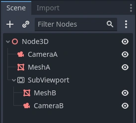
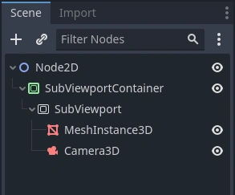
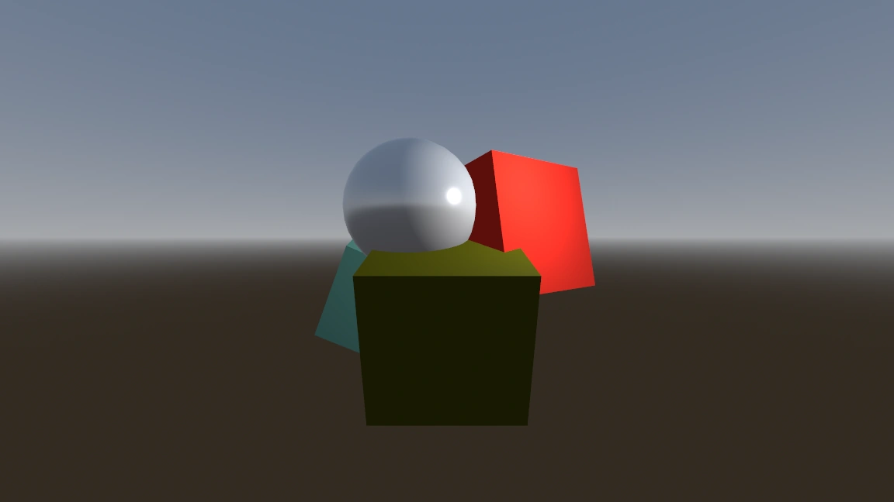
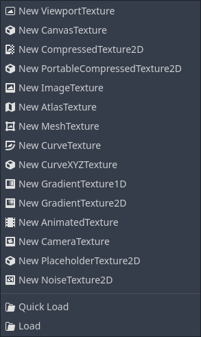

Sử dụng Viewport
Giới thiệu
Hãy xem Viewport như một màn hình mà game được chiếu lên. Để thấy được game, ta cần có một bề mặt để vẽ nó lên. Bề mặt đó là Root Viewport.

SubViewports là một loại Viewport có thể thêm vào scene để có nhiều bề mặt để vẽ. Khi vẽ vào một SubViewport, ta gọi nó là render target. Ta có thể truy cập nội dung của một render target thông qua texture tương ứng của nó. Bằng cách dùng SubViewport làm render target, ta có thể kết xuất nhiều scene cùng lúc, hoặc kết xuất vào một ViewportTexture được áp lên một đối tượng trong scene, ví dụ một skybox động.
SubViewports có nhiều trường hợp sử dụng, bao gồm:
Kết xuất đối tượng 3D trong game 2D
Kết xuất phần tử 2D trong game 3D
Kết xuất texture động
Tạo texture thủ tục (procedural) lúc runtime
Kết xuất nhiều camera trong cùng một scene
Điểm chung của tất cả các trường hợp này là bạn có thể vẽ đối tượng vào một texture như thể nó là một màn hình khác, rồi chọn làm gì với texture thu được.
Một loại Viewport khác trong Godot là Windows. Chúng cho phép chiếu nội dung lên một cửa sổ. Dù Root Viewport là một Window, chúng kém linh hoạt hơn. Nếu muốn dùng texture của một Viewport, phần lớn thời gian bạn sẽ làm việc với SubViewports.
Đầu vào
Viewports cũng chịu trách nhiệm chuyển các sự kiện input đã được điều chỉnh và co giãn phù hợp tới các node con. Mặc định, SubViewports không tự động nhận input, trừ khi chúng nhận từ node cha SubViewportContainer trực tiếp. Trong trường hợp này, có thể tắt input bằng thuộc tính Disable Input.

Để biết thêm về cách Godot xử lý input, hãy đọc bài hướng dẫn Input Event.
Listener
Godot hỗ trợ âm thanh 3D (trong cả node 2D và 3D). Xem thêm trong bài hướng dẫn Audio Streams. Để loại âm thanh này nghe được, Viewport cần được bật làm listener (cho 2D hoặc 3D). Nếu bạn dùng SubViewport để hiển thị World3D hoặc World2D, đừng quên bật tùy chọn này!
Camera (2D & 3D)
Khi dùng Camera3D hoặc Camera2D, nó luôn hiển thị trên Viewport cha gần nhất (đi dần về phía gốc). Ví dụ, trong cấu trúc phân cấp sau:

CameraA sẽ hiển thị trên Root Viewport và sẽ vẽ MeshA. CameraB sẽ được SubViewport ghi lại cùng với MeshB. Dù MeshB nằm trong cây scene, nó vẫn không được vẽ lên Root Viewport. Tương tự, MeshA sẽ không hiển thị từ SubViewport, vì SubViewport chỉ ghi lại các node nằm bên dưới nó trong cây phân cấp.
Mỗi Viewport chỉ có thể có một camera đang hoạt động, nên nếu có nhiều hơn một, hãy đảm bảo camera bạn muốn được đặt thuộc tính current, hoặc biến nó thành camera hiện tại bằng cách gọi:
camera.make_current()
camera.MakeCurrent();
Mặc định, camera sẽ kết xuất mọi đối tượng trong world của nó. Trong 3D, camera có thể dùng thuộc tính cull_mask kết hợp với thuộc tính layer của VisualInstance3D's để giới hạn những đối tượng được kết xuất.
Co giãn & kéo giãn
SubViewports có thuộc tính size, biểu thị kích thước của SubViewport theo pixel. Với các SubViewport là con của SubViewportContainers, các giá trị này bị ghi đè, còn với tất cả các trường hợp khác, nó đặt độ phân giải của chúng.
Bạn cũng có thể co giãn nội dung 2D và làm cho độ phân giải của SubViewport khác với giá trị chỉ định trong size, bằng cách gọi:
sub_viewport.set_size_2d_override(Vector2i(width, height)) # Custom size for 2D.
sub_viewport.set_size_2d_override_stretch(true) # Enable stretch for custom size.
subViewport.Size2DOverride = new Vector2I(width, height); // Custom size for 2D.
subViewport.Size2DOverrideStretch = true; // Enable stretch for custom size.
Để biết về co giãn và kéo giãn với Root Viewport, hãy xem bài hướng dẫn Multiple Resolutions
World
Với 3D, một Viewport sẽ chứa một World3D. Về cơ bản, đây là vũ trụ liên kết vật lý và kết xuất với nhau. Các node dựa trên Node3D sẽ đăng ký vào World3D của Viewport gần nhất. Mặc định, Viewport mới tạo không chứa World3D mà dùng chung với Viewport cha. Root Viewport luôn chứa một World3D, là nơi các đối tượng được kết xuất vào theo mặc định.
Có thể đặt một World3D cho Viewport bằng thuộc tính World 3D; việc này sẽ tách tất cả node con của Viewport này và ngăn chúng tương tác với World3D của Viewport cha. Điều này đặc biệt hữu ích trong các tình huống, ví dụ, bạn muốn hiển thị một nhân vật 3D riêng biệt chồng lên game (như trong StarCraft).
Để hỗ trợ các tình huống bạn muốn tạo Viewports hiển thị một đối tượng duy nhất mà không muốn tạo World3D, Viewport có tùy chọn dùng Own World3D của riêng nó. Điều này hữu ích khi bạn muốn tạo instance nhân vật hoặc đối tượng 3D trong World2D.
Với 2D, mỗi Viewport luôn chứa World2D riêng. Điều này đủ cho hầu hết trường hợp, nhưng nếu muốn dùng chung, bạn có thể làm vậy bằng cách đặt world_2d cho Viewport qua code.
Để xem ví dụ về cách hoạt động, hãy xem lần lượt các dự án demo 3D in 2D và 2D in 3D.
Capture
Bạn có thể lấy ảnh chụp nội dung của Viewport. Với Root Viewport, đây thực chất là ảnh chụp màn hình. Việc này được thực hiện bằng code sau:
# Retrieve the captured Image using get_image().
var img = get_viewport().get_texture().get_image()
# Convert Image to ImageTexture.
var tex = ImageTexture.create_from_image(img)
# Set sprite texture.
sprite.texture = tex
// Retrieve the captured Image using get_image().
var img = GetViewport().GetTexture().GetImage();
// Convert Image to ImageTexture.
var tex = ImageTexture.CreateFromImage(img);
// Set sprite texture.
sprite.Texture = tex;
Nhưng nếu bạn dùng đoạn này trong _ready() hoặc từ frame đầu tiên khi Viewport's khởi tạo, bạn sẽ nhận một texture rỗng vì chưa có gì để lấy làm texture. Bạn có thể xử lý bằng cách (ví dụ):
# Wait until the frame has finished before getting the texture.
await RenderingServer.frame_post_draw
# You can get the image after this.
// Wait until the frame has finished before getting the texture.
await ToSignal(RenderingServer.Singleton, RenderingServer.SignalName.FramePostDraw);
// You can get the image after this.
Viewport Container
Nếu SubViewport là con của một SubViewportContainer, nó sẽ được kích hoạt và hiển thị mọi thứ bên trong. Bố cục trông như sau:

SubViewport sẽ phủ kín toàn bộ vùng của SubViewportContainer cha nếu Stretch được đặt thành true trong SubViewportContainer.
Ghi chú
Kích thước của SubViewportContainer không thể nhỏ hơn kích thước của SubViewport.
Kết xuất
Vì Viewport là lối vào một bề mặt kết xuất khác, nó cung cấp một số thuộc tính kết xuất có thể khác với cài đặt dự án. Bạn có thể chọn mức MSAA khác nhau cho từng Viewport. Hành vi mặc định là Disabled.
Nếu biết Viewport chỉ dùng cho 2D, bạn có thể Disable 3D. Khi đó Godot sẽ giới hạn cách vẽ Viewport. Tắt 3D nhanh hơn một chút và tốn ít bộ nhớ hơn so với khi bật 3D. Nên tắt 3D nếu viewport của bạn không kết xuất gì ở 3D.
Ghi chú
Nếu cần kết xuất bóng đổ 3D trong viewport, hãy đảm bảo đặt thuộc tính positional_shadow_atlas_size của viewport thành giá trị lớn hơn 0. Nếu không, bóng đổ sẽ không được kết xuất. Mặc định, cài đặt dự án tương ứng được đặt là 4096 trên nền tảng desktop và 2048 trên nền tảng di động.
Godot cũng cung cấp cách tùy chỉnh cách mọi thứ được vẽ bên trong Viewports bằng Debug Draw. Debug Draw cho phép bạn chỉ định một chế độ quyết định cách Viewport hiển thị những gì được vẽ bên trong. Debug Draw mặc định là Disabled. Một số tùy chọn khác là Unshaded, Overdraw và Wireframe. Để xem danh sách đầy đủ, tham khảo tài liệu Viewport.
Debug Draw = Disabled (mặc định): Scene được vẽ bình thường.

Debug Draw = Unshaded: Unshaded vẽ scene mà không dùng thông tin chiếu sáng, nên mọi đối tượng hiện ra với màu phẳng theo màu albedo của chúng.

Debug Draw = Overdraw: Overdraw vẽ các mesh bán trong suốt với blend cộng (additive) để bạn thấy các mesh chồng lên nhau thế nào.

Debug Draw = Wireframe: Wireframe vẽ scene chỉ bằng các cạnh của tam giác trong mesh.

Ghi chú
Các chế độ Debug Draw hiện không được hỗ trợ khi dùng phương thức kết xuất Compatibility. Chúng sẽ hiển thị như chế độ vẽ thông thường.
Render target
Khi kết xuất vào SubViewport, những gì bên trong sẽ không hiển thị trong trình chỉnh sửa scene. Để hiển thị nội dung, bạn phải vẽ ViewportTexture của SubViewport ở đâu đó. Có thể yêu cầu việc này qua code bằng cách (ví dụ):
# This gives us the ViewportTexture.
var tex = viewport.get_texture()
sprite.texture = tex
// This gives us the ViewportTexture.
var tex = viewport.GetTexture();
sprite.Texture = tex;
Hoặc có thể gán trong trình chỉnh sửa bằng cách chọn "New ViewportTexture"

rồi chọn Viewport bạn muốn dùng.

Mỗi frame, texture của Viewport's được xóa bằng màu xóa mặc định (hoặc màu trong suốt nếu Transparent BG được đặt thành true). Có thể thay đổi điều này bằng cách đặt Clear Mode thành Never hoặc Next Frame. Đúng như tên gọi, Never nghĩa là texture không bao giờ bị xóa, còn Next Frame sẽ xóa texture ở frame tiếp theo rồi tự chuyển về Never.
Mặc định, SubViewport được kết xuất lại khi ViewportTexture của nó được vẽ trong một frame. Nếu hiển thị, nó sẽ được kết xuất, nếu không thì không. Có thể thay đổi hành vi này bằng cách đặt Update Mode thành Never, Once, Always hoặc When Parent Visible. Never và Always lần lượt sẽ không bao giờ hoặc luôn luôn kết xuất lại. Once sẽ kết xuất lại ở frame tiếp theo rồi chuyển sang Never. Có thể dùng cách này để cập nhật Viewport thủ công. Sự linh hoạt này cho phép người dùng kết xuất một hình ảnh một lần rồi dùng texture đó mà không tốn chi phí kết xuất mỗi frame.
Ghi chú
Hãy xem các demo về Viewport. Chúng có trong thư mục viewport của kho demo, hoặc tại https://github.com/godotengine/godot-demo-projects/tree/master/viewport.